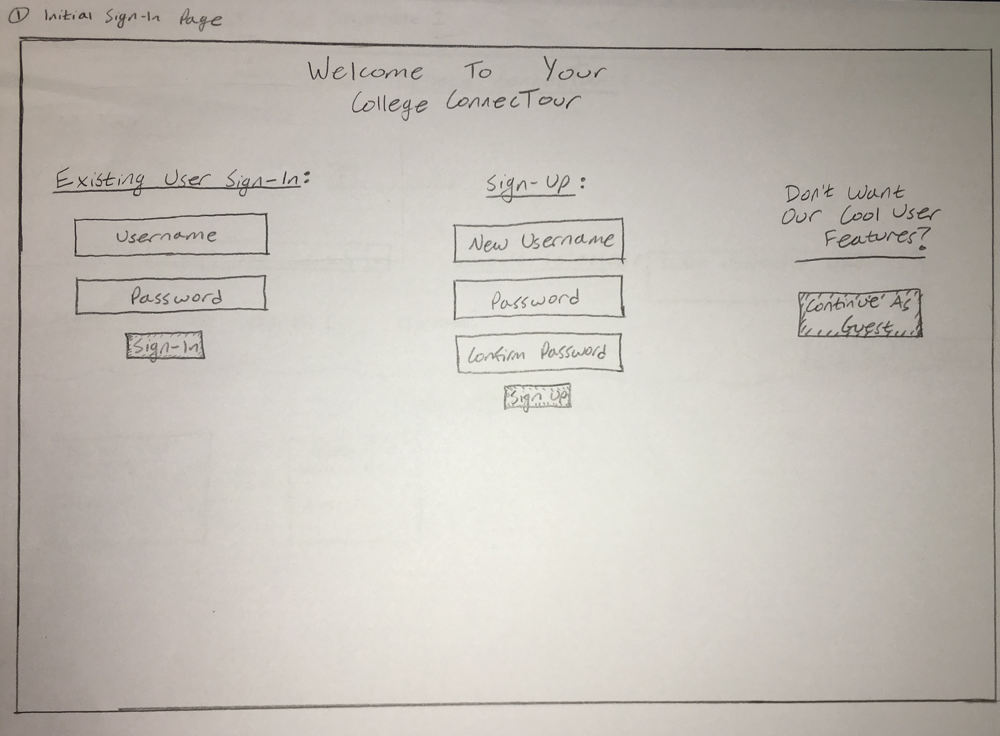
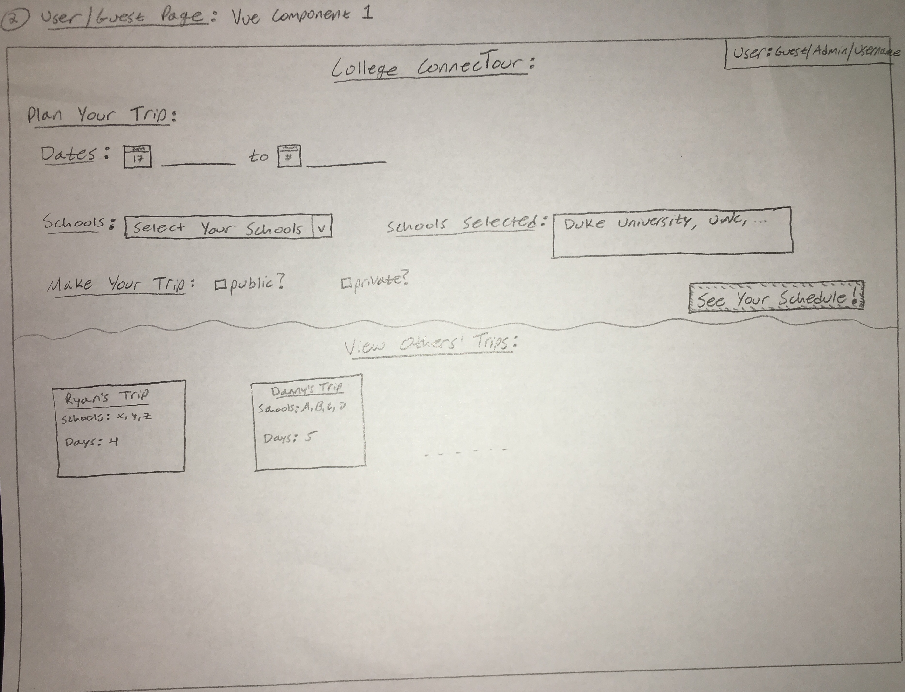
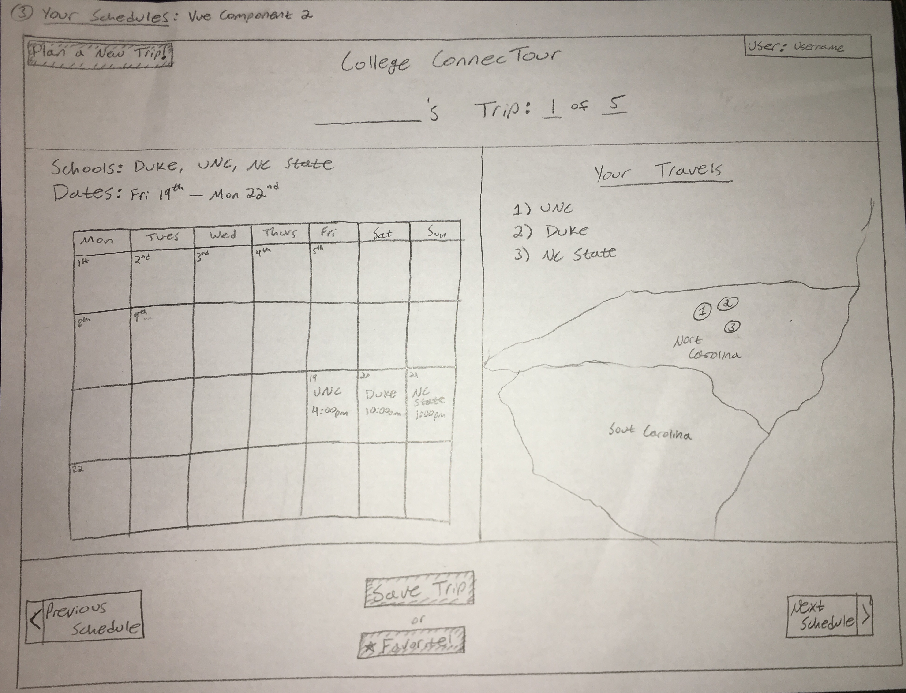

Our web application will work to help people easily plan and schedule college visits while looking into different schools to apply to. It is often difficult to coordinate which universities offer tours at which times that work together, and with people’s busy schedules, they often try to visit 3, 4 or even 5 schools during one trip. This virtual travel agent will help make planning these trips easy and stress free.
The initial page site will be a login site. From there, there will be the option to sign in as an existing user, create a new user, or continue as guest. There will also be an Admin username and password, which will be used for maintaining the website and fixing any issues that arise from the user-entered school data.
Guest users will be able to view other people’s trips that they have made public. They will be able to see the schools that were visited and the range of dates that the trip took place. They will not be able to create their own trip or enter any additional data about schools not originally listed. If a guest attempts to create a new trip, they will be able to enter schools and dates, but when they try to create a trip by clicking “see your schedule”, they will be prompted to sign in as an existing or new users, since it is a user-only feature.
Signed-in existing users will be able to view previously made public trips, while also being able to create their own trips. They will able to select a given number of schools from a drop down menu and a date range from calendar inputs, and their trip will be created. They will also have the option to make their trip public or private. If it is public, anyone will be able to see if from the home screen. If it is private, only them and the admin will be able to see it. Existing users will also be able to enter data for additional schools that are not already in the database. For example, if they look for Duke University in the drop down list but cannot see it, they will have the option to add Duke University and a list of tour dates. This will add Duke University to the database and allow them to use it in their trip, and also allow other users to see and use Duke for their trips. Additionally, users will be able to “favorite” pre-existing public trips. These favorited trips will show up on their main user page when they sign on. The idea behind this is that if a user sees a previous trip with schools they are interested in visiting in the future, they will be able to favorite them and view them them later.
The admin user will be able to do see all trips made on the site, regardless if they are public or private. Also, the admin will be able to investigate the site’s data to check for any data errors. For example, if a user enters “Fake University” as a university with tour times every day starting at midnight, the admin will be able to remove it, since it is clearly not real and should not be listed.
Our webpage will work with two main sets of data. One set of data will be taken from google maps api and will be used to display a map to the user with checkpoints at the locations of the various universities that a user is planning on visiting. In other words, when a user selects schools to visit and dates that they want to visit, in addition to finding a schedule of tours that works, our website will locate these schools on a map and display this map with marked locations to the user. The various universities will be marked by a number, representing the order in which the user is to visit the colleges based on the valid tour schedule that was found. This dataset will use the school inputs from the users in order to locate the schools on the map.
The second set of data that we will use will represent all of the tour times for the different universities. Since it would be extremely difficult to obtain data of actual tour times from every university, we will be using a program-generated “fake” dataset of schools and tour times. This json file will represent different schools with the times that they offer tours for every day of the week (Monday-Sunday). Since we will inevitably not be able to store data for every university, our website will enable users (not guests) to help us out by adding universities that they cannot find in our options and tour times and days for this newly added school. This is an important feature because of the fact that we are using a “fake” data set, so we must allow people to add data that we may have missed. Additionally, for each school and associated tour days and times, our JSON file will have a “user” field, indicating which user added the data (which will be set to “Admin” if it was originally in the dataset) so that we can tell who has contributed to our dataset.
This second set of “fake” data will be used to display trip schedules to the users after they select various schools and days and click the “plan trip” button. They will then be taken to a page with a map of the schools that they are going to visit (as described in the first paragraph of this section) as well as a calendar view with the schools and tour times that the application found to be valid and work together. In other words, an image of a calendar with the location (school) and time of tour represented in a box on the day that the user should plan on visiting said school. If multiple schedules work together, then the user will be able to toggle between the possible schedules, and the displayed data (in the map and calendar view) will change as desired.
As discussed in the “Roles” section above, the admin will be able to check any data that is entered into the school database by a user. This will ensure that no users try to “troll” the site and enter fake schools name and tour times. This will preserve the accuracy of the site. Also, the site will check to make sure valid data is entered for any given trip. When the “see your schedule” button is clicked, the site will check to make sure a non-zero number of schools and dates have been selected. Also, the site will check if the number of schools chosen is plausible for the length of time. For example, if the user selects 10 schools and 2 days for their trip, the site will state that this trip is not plausible in the given amount of time. Additionally, we plan to implement a check of not just the number of schools and the number of days, but also take into account how far apart the schools are. For example, if the user enters that they want to visit Duke University and Stanford University in one day, the site will also produce a message saying the trip in implausible. However, this message will not be produced if the user enters that they want to visit Duke and UNC in one day, since they are 10 minutes away. Lastly, the site check for correctness of user sign-in. If the username or password is incorrect, it give show an error. Errors will also appear if a user attempts to create a new username that already exists.
In order to create our application, we will use vue to make our website function. We plan on using 2 nested vue components. From the initial sign-in page (depicted in the mock-up below), we will have a component representing the main user/interactive page, where users can input data and generate their trip schedules. Then, once the user selects the “plan trip” button, another vue method will be enacted to parse through our datasets in order to determine valid schedules. Then, the user will be directed to the second vue component, which displays their data in map and calendar form as described in the service section above.
We plan to use Firebase to store the site’s data. We want to implement it similar to how it was used in the Trello project, where when a user signs in, they will be able to view their currently planned trips. It will also stores other user’s trip, so users and guests can view them if the trips have been set to public.
The following images depict the 3 main webpages that will used in our final project. The first shows the initial sign-in/sign-up page. The second shows the main page where guests can view previous trips and users can input data to start their own trip. The last image shows the site that shows the trip info, which includes a calendar to show the chosen tour times and a map to show the college locations.
  